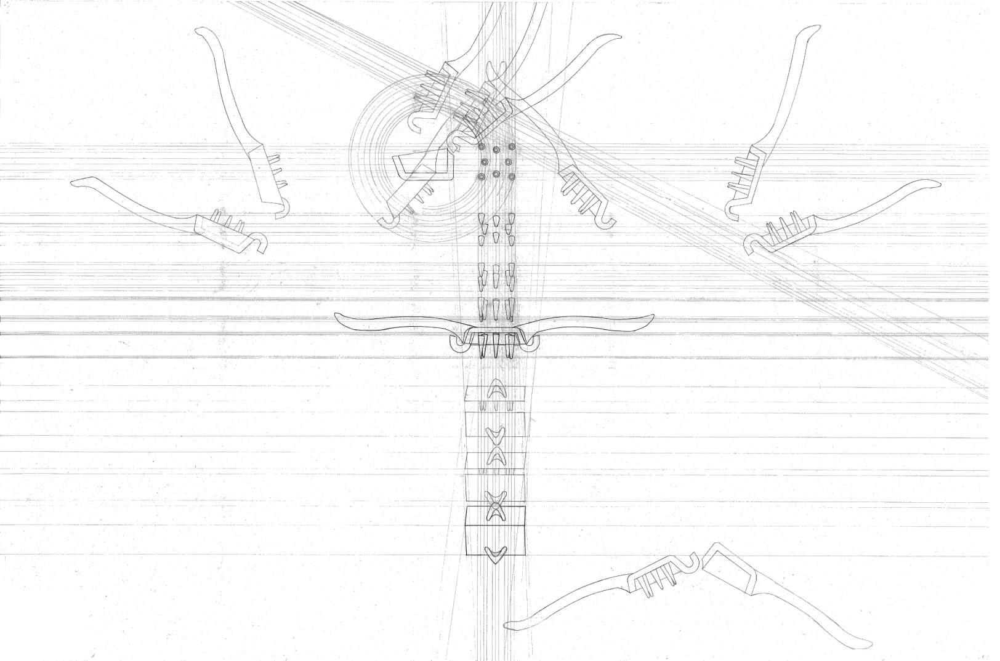
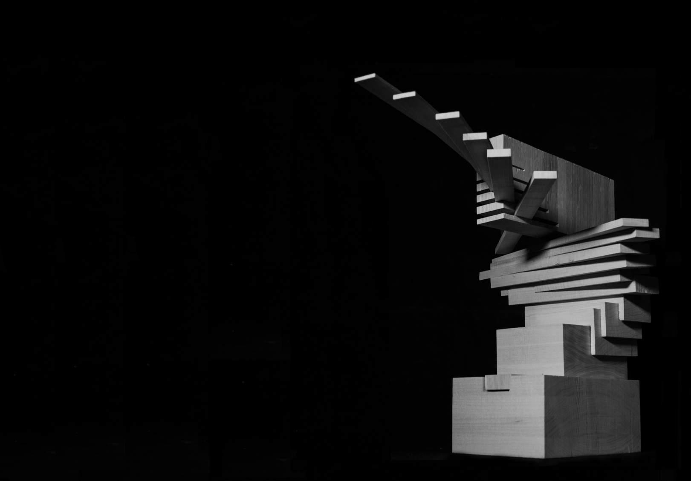
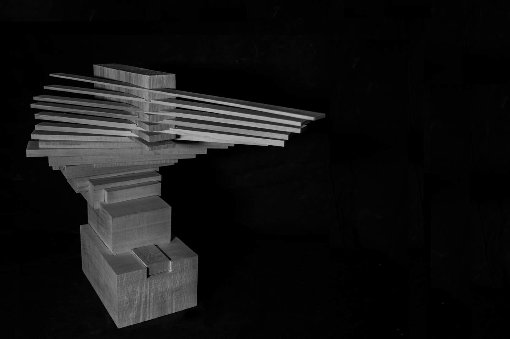

↑
↓
force (completed in collaboartion with gil jang) is an abstract sculpture that
explores the transition
and
juxtaposition between two tools
force parallels the distinction of two
actions (a clean chop and
a rough
press) through the transition of thin
extended blades that sever the
material structure to
nested masses
that dominate and ground the base
the ending “twist” of motion reflects
the rotational motion of the intial tool
and suggests a sense of
flight and
weightlessness to draw attention to the
contrast with the massive bottom
the created space is repetitive,
evolving, and reflects both the idea of
void and of power,
symbolizing both
the ice crusher and the vegatable
chopper


